II Simpósio Oncoderma Recife
5 de junho de 2026 · Sexta-feira · 8h
Auditório Hospital Santa Joana Recife — Graças
Realização
Apoio institucional
.png)
5 de junho de 2026 · Sexta-feira · 8h
Auditório Hospital Santa Joana Recife — Graças
O Hospital Santa Joana Recife e o Instituto Santa Joana de Ensino e Pesquisa – ISEP, na condição de promotores do evento, ressaltam que o principal objetivo desse encontro é abordar as atualizações no diagnóstico e tratamento da oncologia cutânea, com apoio institucional da Clínica de Pele.
Modalidade do evento: aberto para todas as
instituições.
Número de participantes: 70
A programação científica está sob responsabilidade de um time multidisciplinar de especialistas:
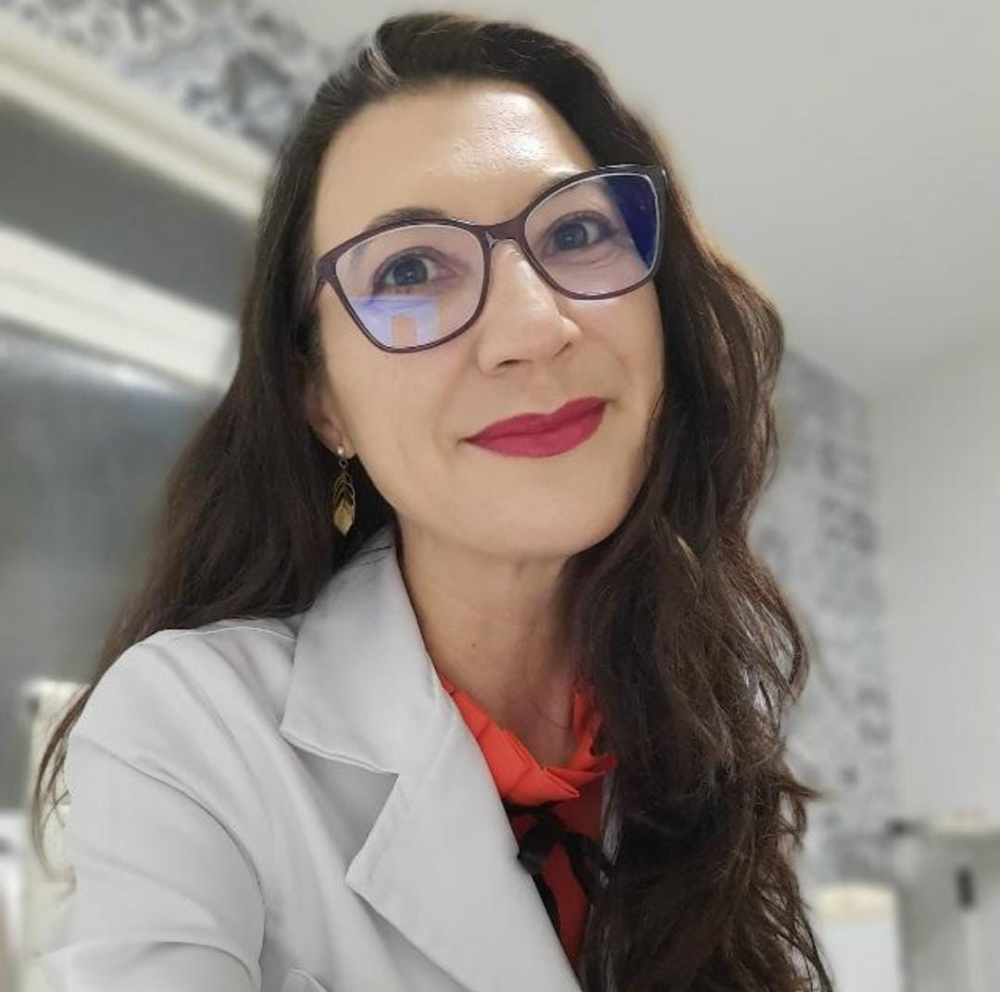
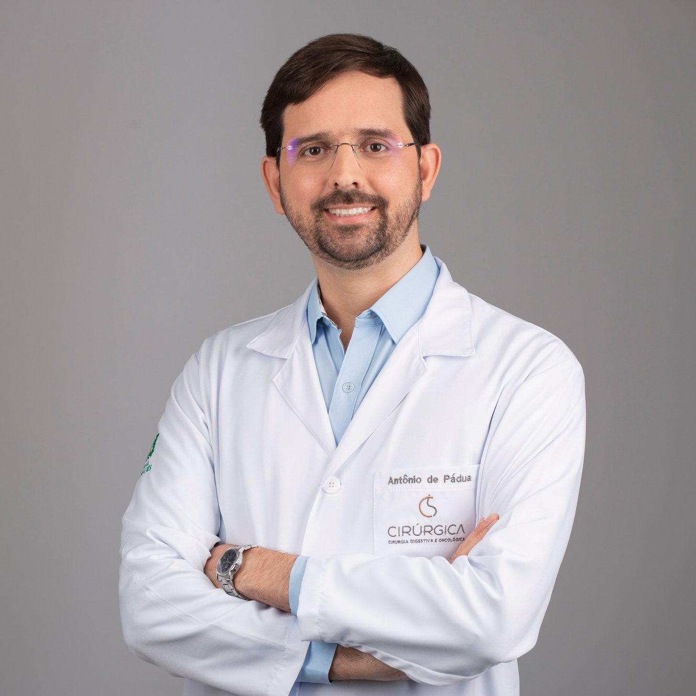

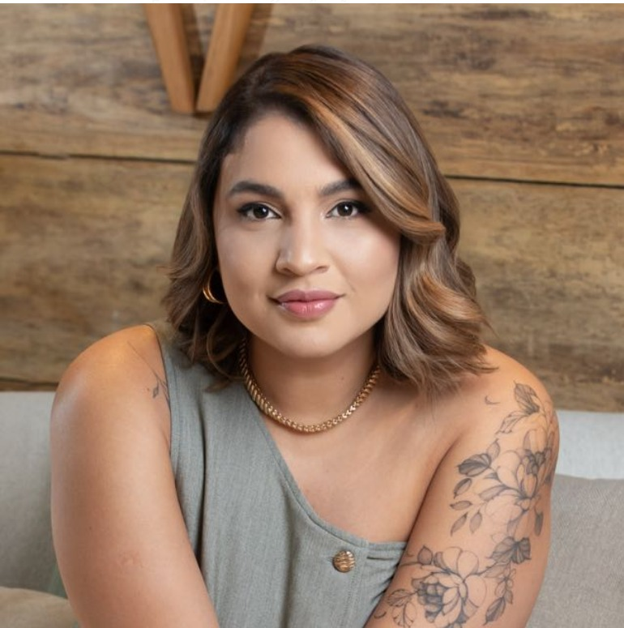
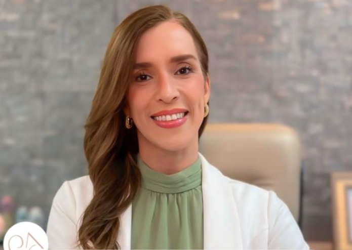


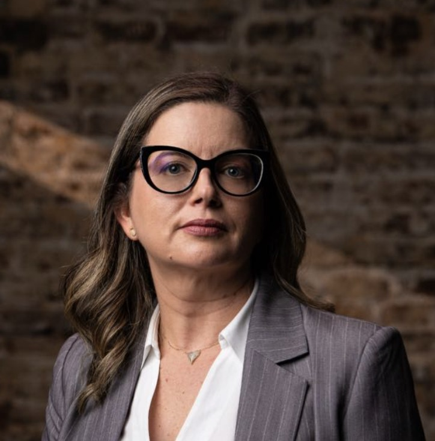
05/06/2026 (sexta-feira) — início às 8h.
| Horário | Atividade | Apresentador(a) |
|---|---|---|
| 08:00 - 08:10 | Abertura | |
|
08:15 - 09:15 (01 hora ) MESA 1 - CÂNCER DE PELE: PREVENÇÃO E DIAGNÓSTICO PRECOCE Presidente: Cristiana Tavares Debatedores: Patrícia Guimarães, Ana Luiza Gadelha |
||
| 08:15 – 08:30 (15 min) |
Prevenção ao câncer de pele: o que realmente tem evidência científica em fotoproteção? | Thamires Alcântara |
| 08:30 – 08:45 (15 min) |
O papel da quimioprofilaxia no CPNM. | Aline Piol |
| 08:45 – 09:00 (15 min) |
Dicas práticas de Dermatoscopia para diagnosticar lesões precoces. | Silvana Cavalcante |
| 09:00 - 09:15 (15 min) |
DISCUSSÃO | |
|
09:15 - 10:30 (01 hora e 15 min) MESA 2 — TUMORES CUTÂNEOS NÃO MELANOMA: REFINANDO O TRATAMENTO Presidente: Luciana Câmara Debatedores: Rebeca Reis, Bruno Pacheco |
||
| 09:15 - 09:30 (15 min) | Cirurgia com controle de margens no câncer de pele em tumores não melanoma | Virgínia Batista |
| 09:30 - 09:45 (15 min) | Há espaço para o BLS no CEC de alto risco? | Beatriz Cavalcanti |
| 09:45 - 10:00 (15 min) | Classificação e avaliação do CEC de alto risco: o olhar do patologista pós C-POST | Laís Príncipe |
| 10:00 - 10:15 (15 min) | CEC de alto risco: a abordagem do oncologista clínico | Antônio Douglas |
| 10:15 - 10:30 (15 min) | DISCUSSÃO | |
| 10:30 - 10:50 (20 min) |
COFFEE BREAK | |
|
10:50 - 11:50 (1 hora) MESA 3 — DESAFIOS NO CÂNCER DE PELE NÃO MELANOMA Presidente: Antônio de Pádua Debatedores: Rogério Santos, Daniela Takano |
||
| 10:50 - 11:05 (15 min) | Tratamento sistêmico no CBC | Rodrigo Arruda |
| 11:05 - 11:20 (15 min) | CBC com resposta parcial ao tratamento sistêmico - como proceder? | Suzane Leite |
| 11:20 - 11:50 (30 min) | Caso clínico contextualizado: Carcinoma de Merkel |
Apresentação: Rogério Santos Discussão: Cristiana Tavares Luis Felipe Carvalho Suzane Leite Daniela Takano Claudia Fontan Rodrigo Arruda |
| 11:50 - 13:00 | Almoço | |
|
13:00 - 14:00 (01 hora) MESA 4 — FERRAMENTAS NO MANEJO DE TUMORES CUTÂNEOS Presidente: Jéssica Guido Debatedores: Gessiane Alves, Ilka Rocha |
||
| 13:00 - 13:15 (15 min) |
Mapeamento Corporal: quem precisa fazer e por quê? | Taís Oliveira |
| 13:15 - 13:30 (15 min) |
Quando indicar a avaliação genética ao paciente com câncer de pele? | Leandro Apolinário |
| 13:30 - 13:45 (15 min) |
Ultrassonografia de Alta Frequência para os cânceres de pele: onde estamos? | Cláudia Fontan |
| 13:45 - 14:00 (15 min) |
DISCUSSÃO | |
|
14:00 - 15:00 (01 hora) MESA 5 — MANEJO NA NOVA ERA DE TRATAMENTO DO MELANOMA: NOVOS DESAFIOS Presidente: Luciana Câmara Debatedores: Antônio de Pádua, Silvia Fontan |
||
| 14:00 - 14:15 (15 min) |
Neoadjuvância do melanoma EC III | Nildevande Firmino |
| 14:15 - 14:30 (15 min) |
Desafios na avaliação de resposta patológica pós NADINA | Daniela Takano |
| 14:30 - 14:45 (15 min) |
Resposta patológica completa - Só a retirada do linfonodo index é suficiente? | Paulo Miranda |
| 14:45 - 15:00 (15 min) |
DISCUSSÃO | |
| 15:00 - 15:20 (20 min) |
COFFEE BREAK | |
|
15:20 - 16:35 (01 hora e 15 min) MESA 6 — MELANOMA EM FOCO: ESTRATÉGIAS DO CENÁRIO ADJUVANTE AO METASTÁTICO Presidente: Nildevande Firmino Debatedores: Manoel Andrade, Domingo Lins |
||
| 15:20 - 15:35 (15 min) |
Otimizando a adjuvância do melanoma ECIII | Luis Felipe Carvalho |
| 15:35 - 15:50 (15 min) |
Linfonodo ilíaco: tratar como doença sistêmica? | Rebeca Reis |
| 15:50 - 16:05 (15 min) |
Melanoma metastático BRAF +: da biologia tumoral ao tratamento sistêmico | Luiz José Batista |
| 16:05 - 16:20 (15 min) |
Sequenciamento terapêutico do melanoma metastático | Silvia Fontan |
| 16:20 - 16:35 (15 min) |
DISCUSSÃO | |
|
16:35 - 17:35 (01 hora) MESA 7 — INTERFACE DERMATO-ONCO DURANTE TRATAMENTO ONCOLÓGICO Presidente: Rossano Araújo Debatedores: Consuelo Albuquerque, Cristiane Violet |
||
| 16:35 - 16:50 (15 min) |
Toxicidade Cutânea pela imunoterapia | Jessica Guido |
| 16:50 - 17:05 (15 min) |
Os limites da estética: como cuidar da auto-estima do paciente oncológico? | Janielli Assis |
| 17:05 - 17:20 (15 min) |
Protocolos de interface dermato-oncologia durante o tratamento oncológico | Natália Diniz |
| 17:20 - 17:35 (15 min) |
DISCUSSÃO | |
| 17:35 - 17:45 (10min) |
Encerramento | |


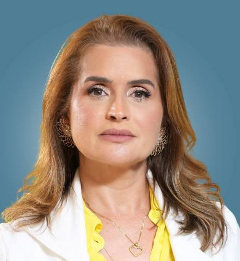
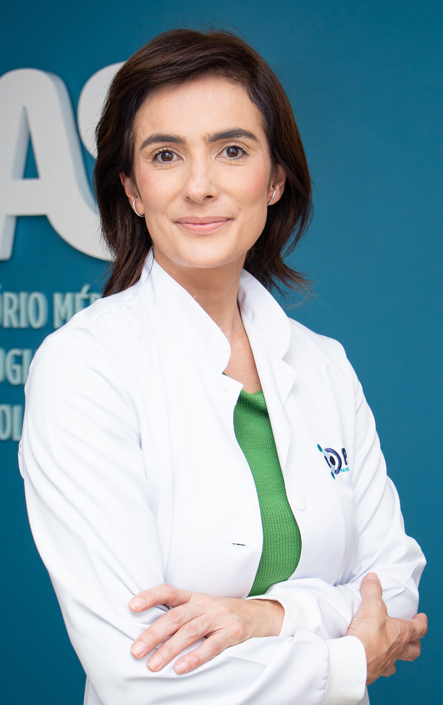
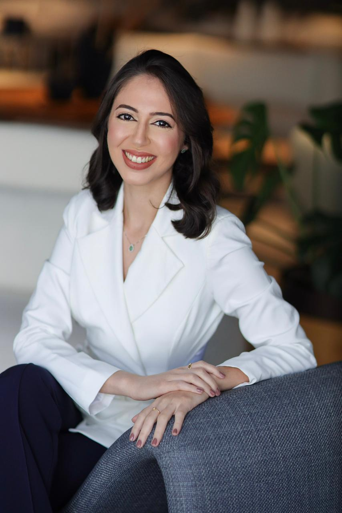
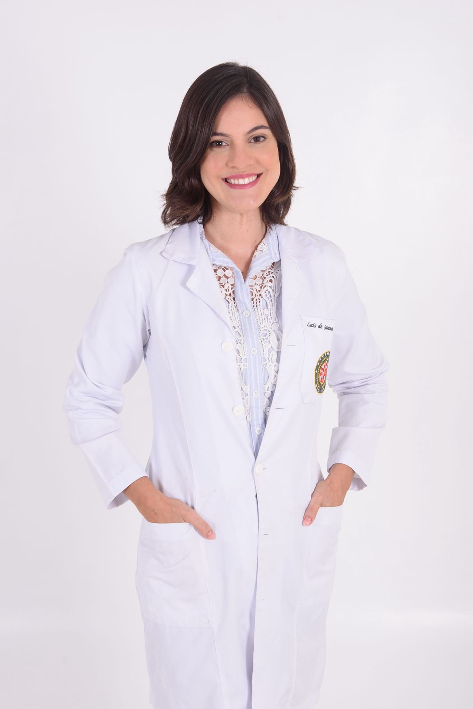
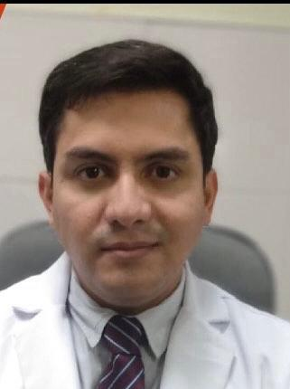

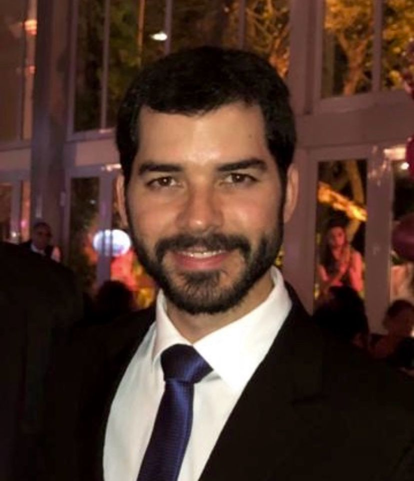
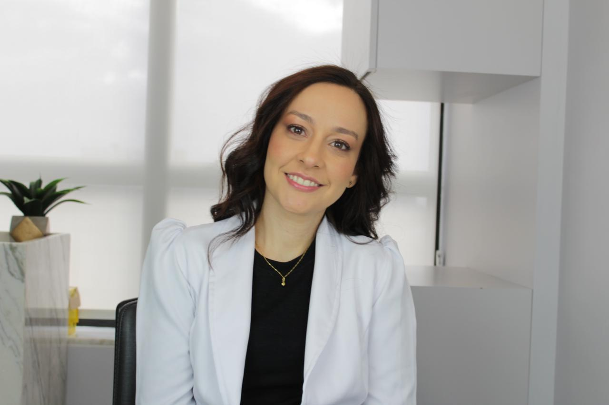

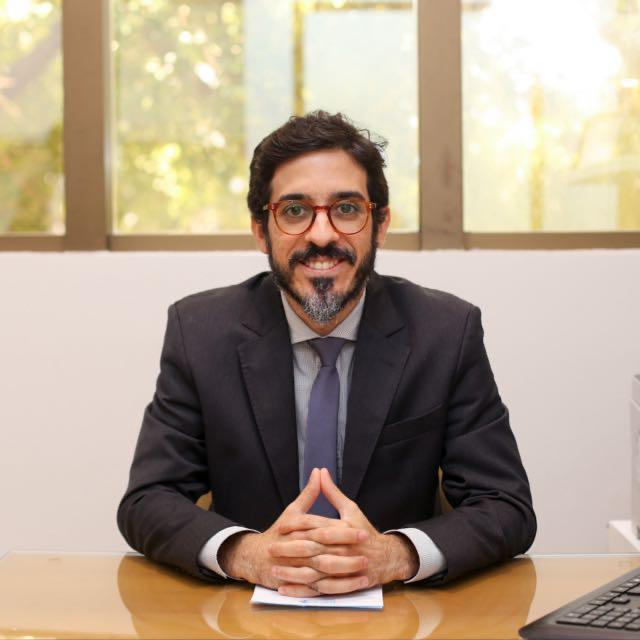
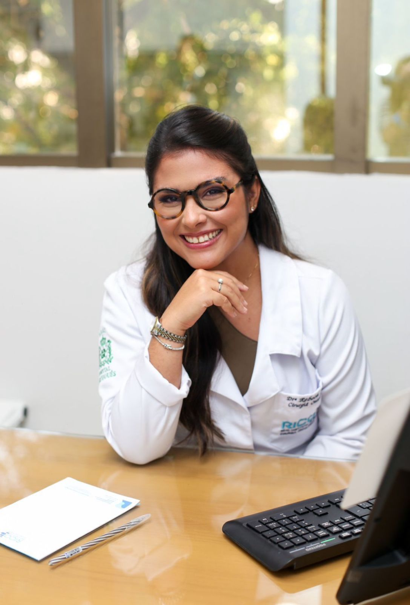
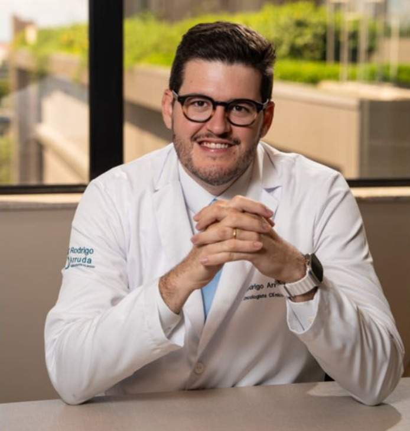
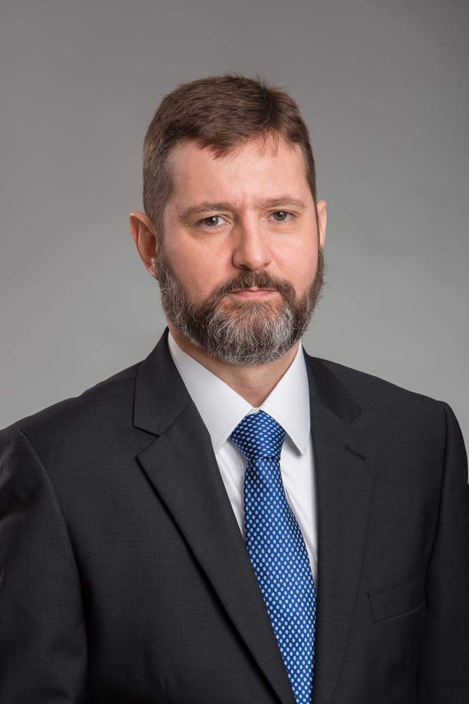
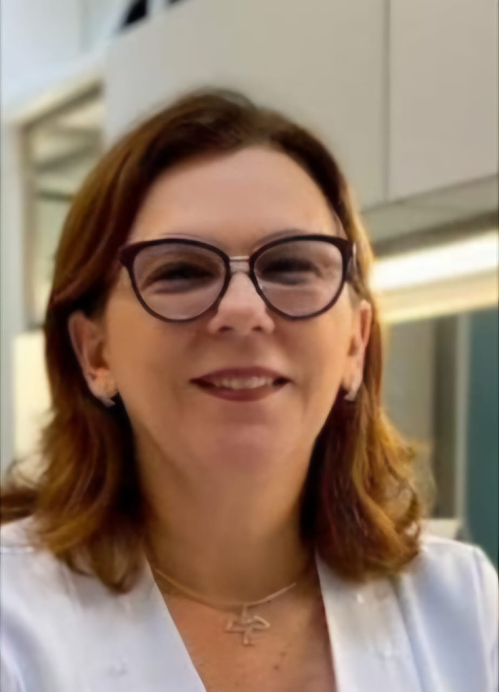
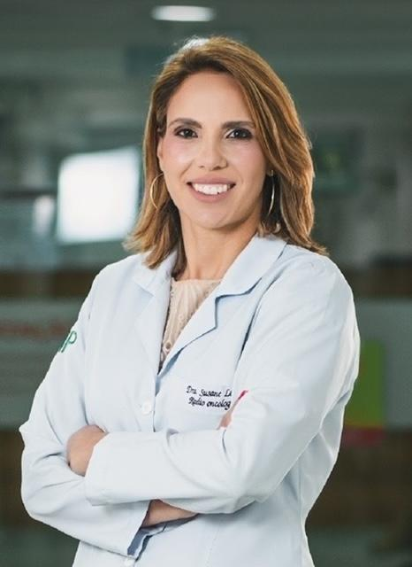
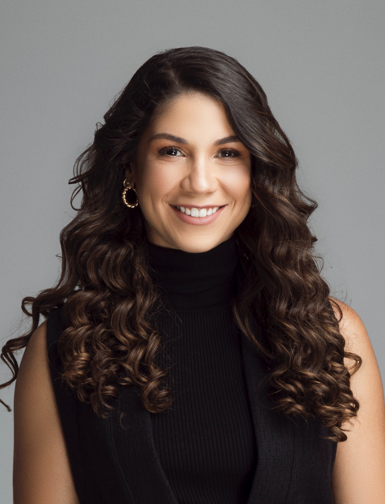
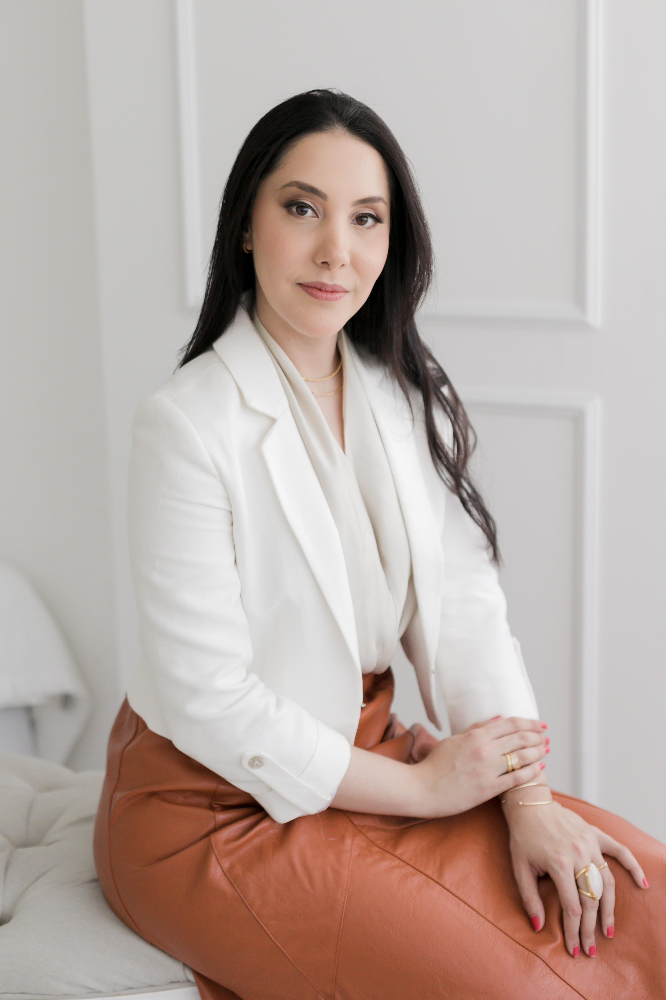
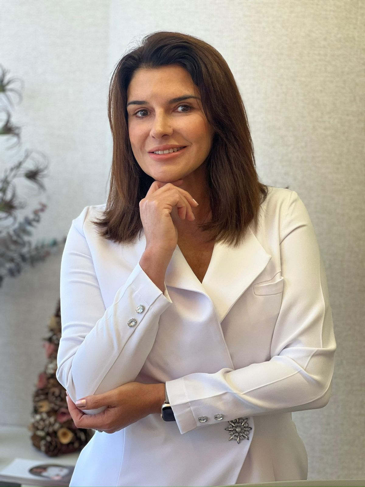
O evento será realizado no Auditório do Hospital Santa Joana Recife, no bairro das Graças.
Endereço:
Av. Joaquim Nabuco, 200 — Graças
Recife — PE
Use o mapa ao lado para orientação de acesso.
As inscrições foram encerradas. Em caso de dúvidas, fale com a organização na seção de contato.
Inscrições encerradasAgradecemos o apoio das empresas que viabilizam este simpósio.
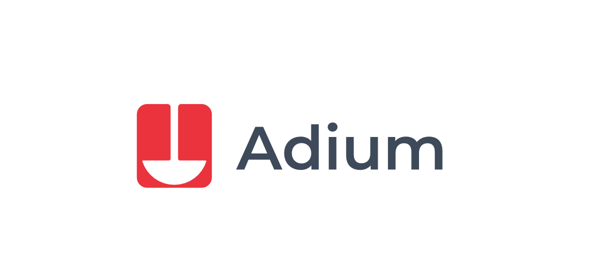
Reviva os melhores momentos do II Simpósio Oncoderma Recife com os registros oficiais do evento.
Para dúvidas sobre o simpósio ou suporte nas inscrições, entre em contato com a organização:
Endereço:
Rua João Eugênio de Lima, 143 – Sala 01
Boa Viagem – Recife – CEP 51.030-360
Telefone/WhatsApp:
(81) 99985-1712
·
(81) 9232-5922
E-mail:
eventos@lukaplan.com.br
simposiodeoncologiadohsj@gmail.com
As inscrições estão encerradas. Cancelamentos ou alterações devem ser comunicados com antecedência à organização, para permitir repasse da vaga quando aplicável.